Layout 2: the build, the settings and the map generator
River Valley 4242 at 128×128, the High look, at 1920×1080 and 2560×1440: the design to build. The Map Generator button opens the 352px map generation panel. On the map: the Show toggles as checkbox rows at the top left, Legend last, its full legend under them when ticked; the water controls in one row at the top middle; the camera group, the height slice, Slow forces and the sound at the top right; the objects as a menu at the bottom right, always shown, one per row with no headings; the minimap, the coordinates and the readout at the bottom left; one bar at the bottom middle with the held tool's settings above it on the bar's cells. Click a picture for full size. What doesn't fit is listed in DESIGN.md, "Layout 2 mockups". Built (2026-10-03): each mockup now has the build beside it, the same map and state; the map's name is the one M9b gives it (Standing Stone), and the legend shows the objects with the objects menu's pictures at one row height. DESIGN.md, "Layout 2 as built", says what the mockups left open.
The map generator: two structures (2026-10-04)
Every generator setting in one panel over the map at the left, vertically centred between the header and the bar. Opening it never resizes the map, so the title, the water row and the bar all centre on the window (960 and 1280, to the pixel). Both use the bar's control language: a number is a slider with its value at the right of its name, a choice is the one segmented look. Both are 640px wide at both sizes, and nothing scrolls. Live on /preview/ with ?gen=a or ?gen=b.
A: the sheet
A title block on top: the Name as the map's title, with Generate and Surprise me beside it; Theme; Seed and Size. Under a hairline, the five groups in three columns: Terrain and Difficulty, Water and Hazards, Resources and On this map. Collapsed: two named tabs on the window's left edge at its centre, Map Generator and Your maps; the header's Map Generator button opens it too. Open, the sheet slides out from the edge and the tabs ride its right edge. Your maps gets its own tab, opening in the same place. On this map closes the third column.
A, collapsed

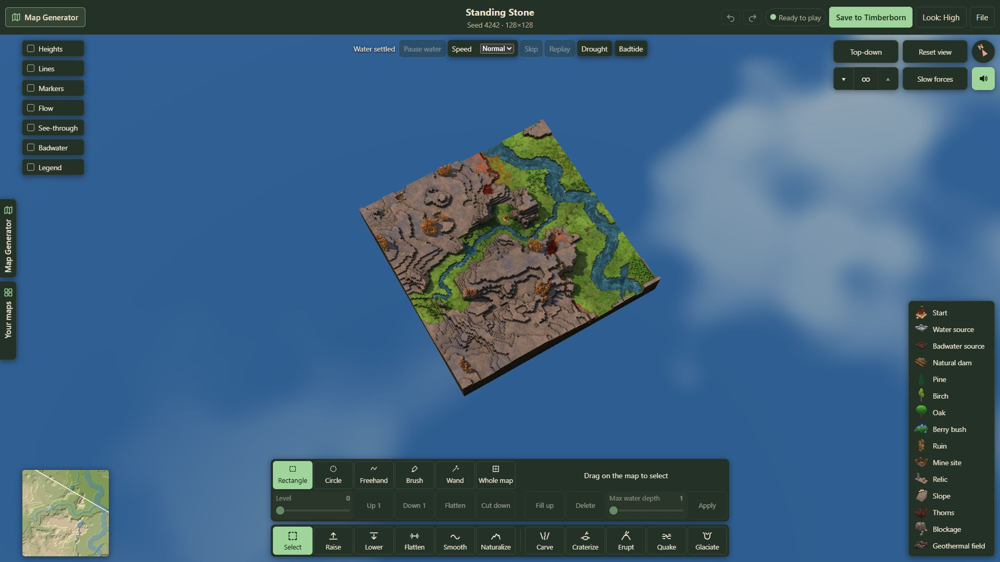

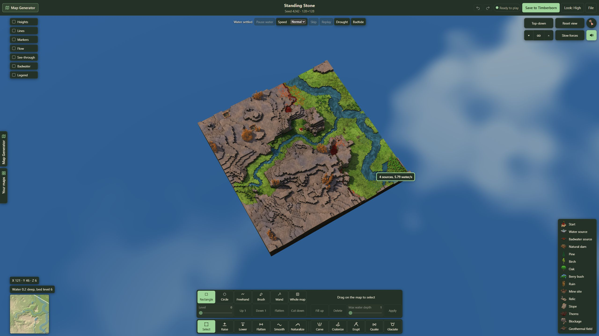
A, open

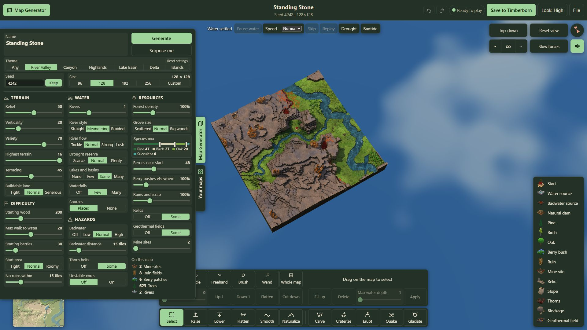

A, open, with a long name

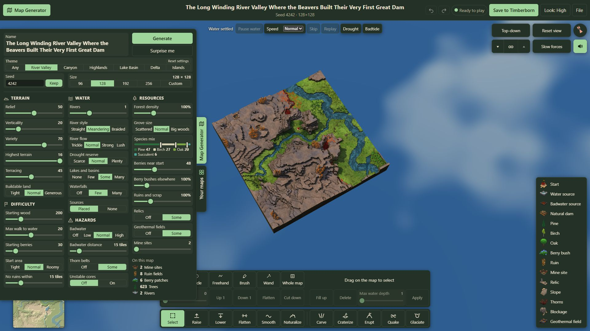

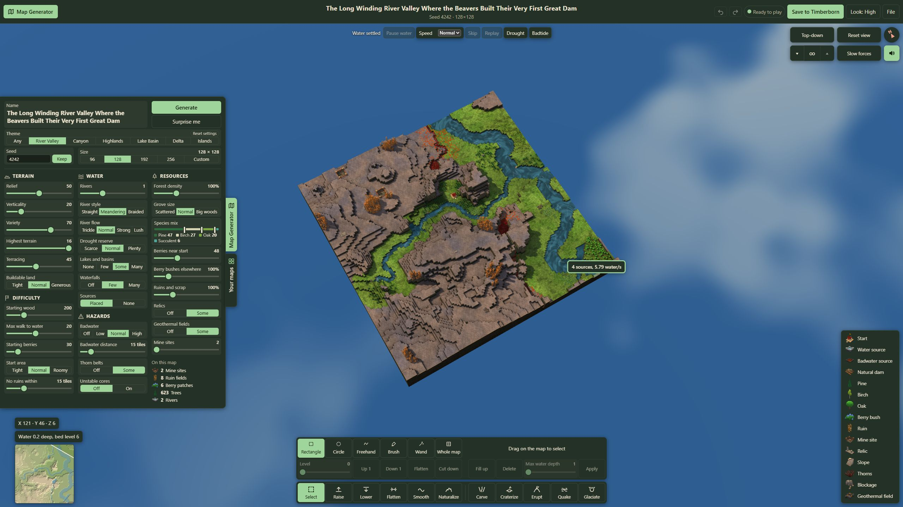
B: the board
The bar's own 76px cells, eight across. The first column holds Generate and Surprise me, then each group's name with its picture, like a tool's cell on the bar. The other seven columns hold the settings, each a plate on whole cells, each group a band. Collapsed: one named tab on the left edge at its centre, plus the header's Map Generator button. Your maps moves to the header, beside Map Generator, opening in the same place. On this map is one line at the board's foot.
B, collapsed

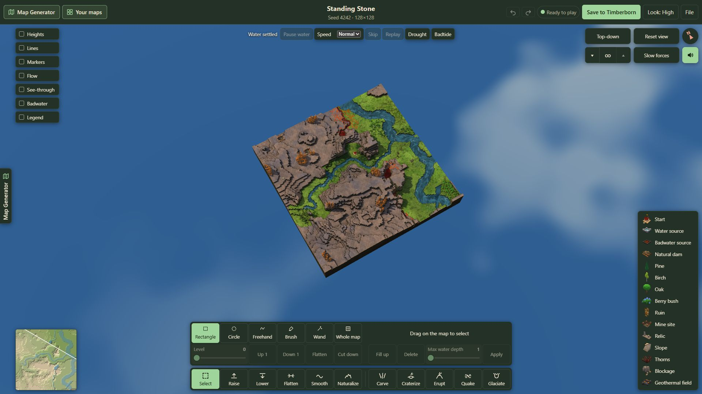

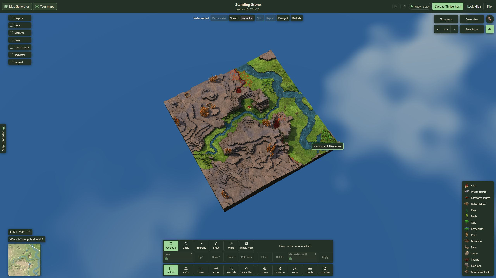
B, open

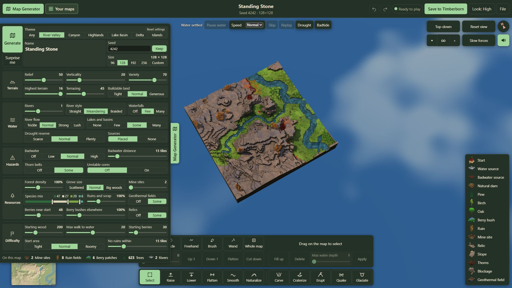

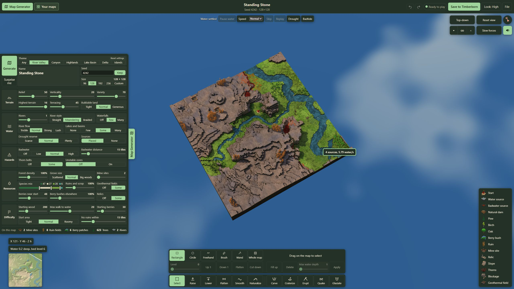
B, open, with a long name

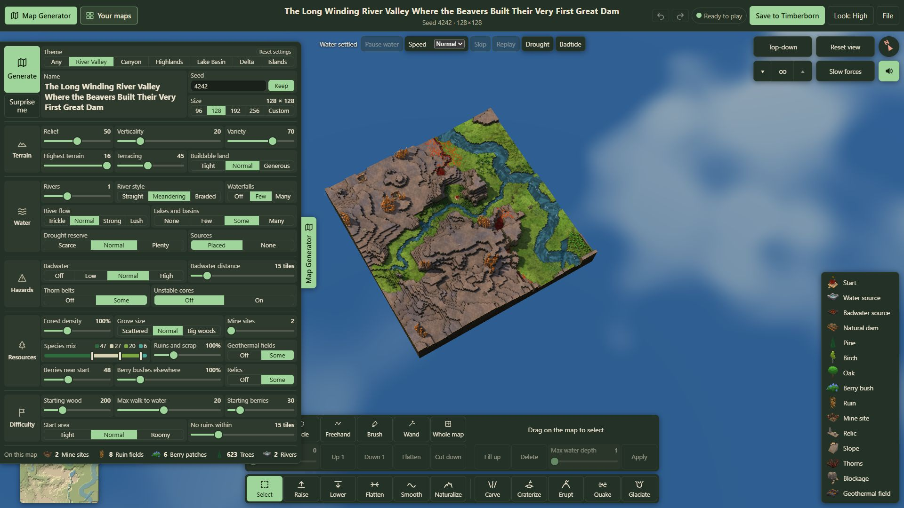

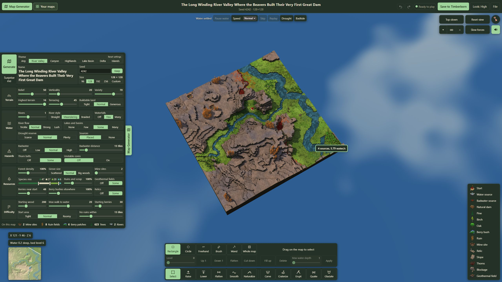
Every setting
Defaults are River Valley's at 128×128. “Limits for this size” is gone. Nothing is cut. The changes that need Kyler's yes are listed under the table.
| Group | Setting | Control | Range or choices | Default | Today |
|---|---|---|---|---|---|
| Top | Theme | Choice, 7 | Any · River Valley · Canyon · Highlands · Lake Basin · Delta · Islands | River Valley | Dropdown |
| Top | Seed | Text field and Keep | Up to 24 letters or digits; Keep holds it for the next Generate | 4242, Keep off | Same |
| Top | Size | Choice, 5 | 96 · 128 · 192 · 256 · Custom (width and height typed, 48–256) | 128 × 128 | Dropdown, then two fields |
| Top | Name | Text field, two lines | Up to 80 letters | The name M9b gives (Standing Stone) | Same |
| Terrain | Relief | Slider | 0–100 | 50 | Slider |
| Terrain | Verticality | Slider | 0–100 | 20 | Slider |
| Terrain | Variety | Slider | 0–100 | 70 | Slider |
| Terrain | Highest terrain | Slider | 10–16; 10–22 from Verticality 70 | 16 | Slider |
| Terrain | Terracing | Slider | 0–100 | 45 | Slider |
| Terrain | Buildable land | Choice, 3 | Tight · Normal · Generous | Normal | Dropdown |
| Water | Rivers | Slider | 0–3 | 1 | Slider |
| Water | River style | Choice, 3 | Straight · Meandering · Braided | Meandering | Dropdown |
| Water | River flow | Choice, 4 | Trickle · Normal · Strong · Lush | Normal | Dropdown |
| Water | Drought reserve | Choice, 3 | Scarce · Normal · Plenty (one too big for the size is greyed) | Normal | Dropdown |
| Water | Lakes and basins | Choice, 4 | None · Few · Some · Many | Some | Dropdown |
| Water | Waterfalls | Choice, 3 | Off · Few · Many | Few | Dropdown |
| Water | Sources | Choice, 2 | Placed · None | Placed | Dropdown |
| Hazards | Badwater | Choice, 4 | Off · Low · Normal · High | Normal | Dropdown (“No badwater”) |
| Hazards | Badwater distance | Slider | 8–60 tiles | 15 tiles | Slider |
| Hazards | Thorn belts | Choice, 2 | Off · Some | Some | Dropdown |
| Hazards | Unstable cores | Choice, 2 | Off · On | Off | Dropdown (“Unstable cores (advanced)”) |
| Resources | Forest density | Slider | 50–200%, steps of 5 | 100% | Slider |
| Resources | Grove size | Choice, 3 | Scattered · Normal · Big woods | Normal | Dropdown |
| Resources | Species mix | One bar of four shares | Pine · Birch · Oak · Succulent, summing to 100 | 47 · 27 · 20 · 6 | Four typed weights, 0–100 each |
| Resources | Berries near start | Slider | 20–100 | 48 | Slider |
| Resources | Berry bushes elsewhere | Slider | 50–300%, steps of 5 | 100% | Slider |
| Resources | Ruins and scrap | Slider | 25–300%, steps of 5 | 100% | Slider |
| Resources | Relics | Choice, 2 | Off · Some | Some | Dropdown |
| Resources | Geothermal fields | Choice, 2 | Off · Some | Some | Dropdown |
| Resources | Mine sites | Slider | 2–4 | 2 (3 above 128×128) | Slider |
| Difficulty | Starting wood | Slider | 0–800 logs, steps of 10 | 200 | Typed number |
| Difficulty | Max walk to water | Slider | 4–40 tiles | 20 | Typed number |
| Difficulty | Starting berries | Slider | 0–200 bushes | 30 | Typed number |
| Difficulty | Start area | Choice, 3 | Tight · Normal · Roomy | Normal | Dropdown (“Prefer tight”, “Prefer roomy”) |
| Difficulty | No ruins within | Slider | 0–60 tiles | 15 tiles | Typed number |
Changes for a yes: (1) Species mix becomes one bar of four shares, with three edges to drag, in place of four typed weights. The generator reads the four as proportions, so the same shares make the same forests. (2) Difficulty's four typed numbers become sliders, the one number look. (3) Shorter option words: Badwater's “No badwater” is Off; Start area's “Prefer tight” and “Prefer roomy” are Tight and Roomy; “Unstable cores (advanced)” is Unstable cores, with “advanced” in its tooltip. (4) “Reset to the theme's settings” is one small Reset settings button on Theme's name line.
Also in this round

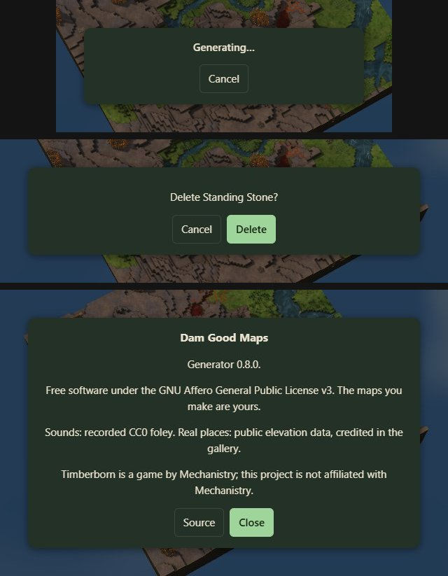

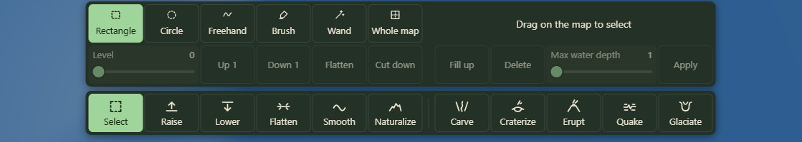
Option B as built (2026-10-03)
Kyler picked B, with five fixes, now built: one grid for both rows, the bar's own 11 cells, every setting on whole cells so the edges line up with each other and the bar; no keys written in the panel, only in tooltips; Auto's pick outlined (a hollow knob, an outlined option), the player's filled; names at one brighter size; one 120px height for every tool, no empty cells. The area brush joins Brush once #227 merges.
Select


Select, with a selection


Raise


Lower


Flatten


Smooth


Naturalize


Carve


Craterize


Erupt


Quake


Glaciate


The settings design pass (2026-10-03): two options, Kyler picked B
Every tool's settings above the bar: today, then option A (three rows, a fixed 176px) and option B (two rows, a fixed 120px), at the bar's exact width, the same height for every tool. One look per kind: a number is a slider with its value at the right of its name; a choice is one segmented look (toggles as Off and On); Auto is one small word in the same place on every control that has it; no dropdowns. More is gone: every force setting always shows. New controls: Smooth's and Naturalize's Strength, Quake's Side, and the area brush as the fourth Brush choice on Raise and Lower. Carve, the fullest tool (nine settings and Try another), sets both heights.
Select


Select, with a selection


Raise


Lower


Flatten


Smooth


Naturalize


Carve


Craterize


Erupt


Quake


Glaciate


The object window's Turn, and the panel's fields showing their whole values


Your maps' menu and the counts (2026-10-03)
The menu on a map in Your maps


A map renamed in place


The counts under On this map


Kyler's four fixes (2026-10-03)
A map being made: the dialog and its Cancel


A water source picked on the map: This source in one line


After Kyler's sitting (2026-10-03): the object window and the bottom-left group
A water source picked from the list


A water source picked on the map


The Legend on, the bottom-left group under it


1. The panel open, Select in hand


2. Water source picked: its row lit


3. Legend ticked: the full legend under the Show column